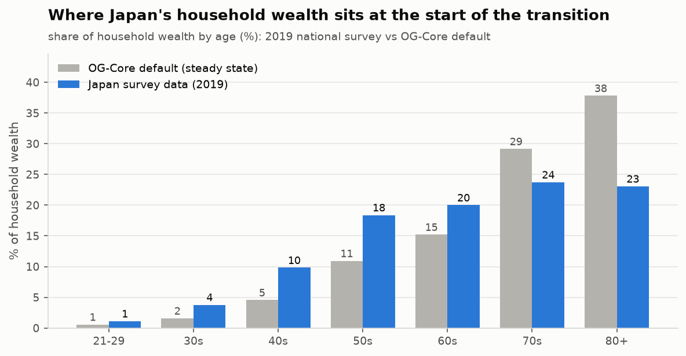

Initial distribution of household wealth#
A transition path needs a starting point: how much wealth each cohort holds when the path begins. By default OG-Core takes the shape of the terminal steady state’s wealth-by-age profile and rescales it to the initial population. For a country whose population today is very different from its long-run stable population, that is a poor approximation, and Japan is the extreme case.
OG-JPN replaces the default with Japan’s observed distribution (ogjpn/wealth.py), using the initial_hhwealth_dist parameter added to OG-Core in #1254. (This project proposed the original hook in #1209; the maintainers merged a broader version.)
Data#
Age profile. Mean household net worth by age of household head, all households, from the 2019 National Survey of Family Income, Consumption and Wealth (2019年全国家計構造調査, Statistics Bureau of Japan), summary of results, Figure IV-4. Net worth (家計資産総額) is net financial assets plus housing and residential land.
Age of head |
under 30 |
30s |
40s |
50s |
60s |
70s |
80+ |
|---|---|---|---|---|---|---|---|
Net worth (thousand yen) |
2,568 |
8,701 |
19,035 |
29,067 |
40,351 |
40,903 |
43,860 |
Split across lifetime-income groups. The survey summary does not cross age with lifetime income, so the split across OG-Core’s J income groups at each age is taken from the model’s own steady state. Only the age profile is replaced by data.
Construction#
For model age s and income group j, the share of aggregate household wealth is
where \(\omega_{0,s,j}\) is the initial population share, \(W(a)\) is survey net worth interpolated linearly between age-band midpoints (flat beyond the first and last), \(a_s\) is the age at which savings chosen at s are held, and \(\bar{b}_{s,j}\) is steady-state savings. The result is normalized to sum to one. The level of aggregate wealth stays at the steady-state level unless initial_wealth_ratio is also set.
Result#


Fig. 2 Share of household wealth by age at the start of the transition: OG-Core’s steady-state default vs Japan’s survey data.#
The steady-state proxy puts 37 percent of household wealth with people aged 80 and over; the survey puts it at 23 percent. Japan’s wealth is concentrated in people’s 50s and 60s far more than the steady state implies.
In a like-for-like test (the earlier flat-tax calibration), starting the baseline transition from the observed distribution cut the resource-constraint error at t = 2 from 1.80e-3 to 1.24e-3 (31 percent smaller) and reduces the errors at t = 3 to 5 about 2.5-fold. The t = 2 error itself turned out to come from OG-Core’s population projection, which started one year early, so that the population broke its own law of motion between periods 1 and 2 (Demographics). The error is proportional to the wealth held at the ages affected, which is why a different wealth distribution shrank it without removing it.
Level of wealth#
The 2023 national accounts (Cabinet Office, 2023年度国民経済計算, stock edition) give household net worth of 2,965.1 trillion yen, of which 767.1 trillion is land. Against FY2023 nominal GDP of 595.2 trillion yen, that is 4.98 times GDP, or 3.69 times GDP excluding land, the comparable concept because the model has no land. The model’s steady state holds 5.45 times GDP, about 50 percent more. That gap is the same one behind the high capital-output ratio (see Validation against Japan). The ratios are in ogjpn.wealth but are not yet passed to OG-Core as initial_wealth_ratio, because starting a third below the steady-state wealth level is a large shock that needs testing of its own.
Known limitations#
Household vs person. The survey reports wealth per household by the age of the head; the model is per person. Assigning household wealth to the head’s age slightly overstates wealth at young ages.
Age bands. The survey’s seven bands are interpolated linearly, so within-band shape is not data.